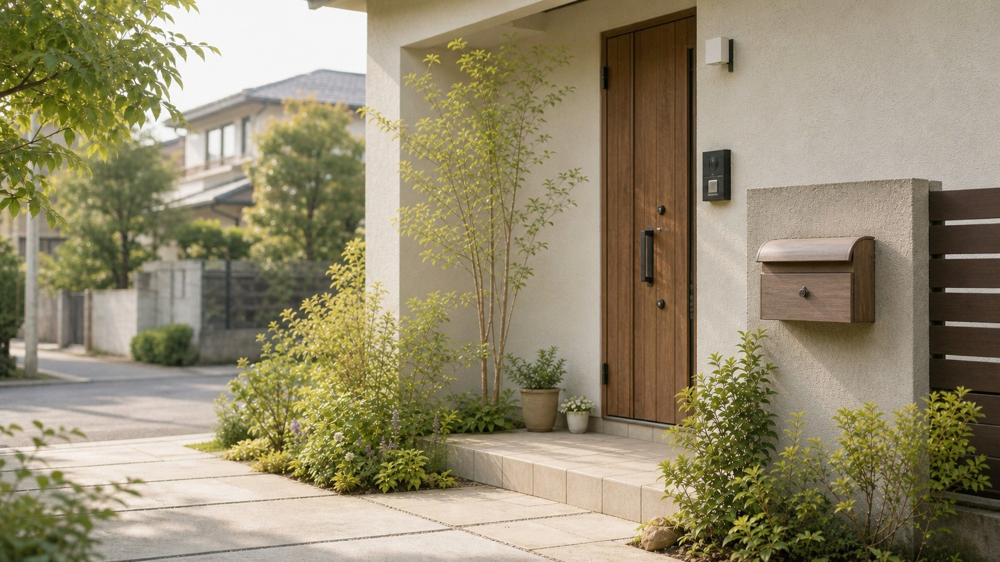

暮らしのちょっとしたお手伝い
- スマホ・LINE・写真・各種設定
- 草刈り・庭まわり
- 重い物の買い物のお手伝い
- 電球交換、荷物移動などの小さな作業
- 障子・網戸など住まいの困りごと
「こんなことを頼んでいいの？」という内容でも、まずご相談ください。
暮らしの「困った」、相談だけで終わらせません。
スマホ、草刈り、買い物、住まいのちょっとした困りごとから、業者探し・見積もり・立会い、見守り、空き家、相続前の整理まで。まずは「これ、誰に頼めばいい？」という段階からご相談ください。
できることは、その場でお手伝い。
専門業者が必要なら手配。必要なら立会いまで。
電話相談：6:00〜24:00
運営：株式会社サンアローズ

こんなことで困っていませんか
できること
「こんなことを頼んでいいの？」という内容でも、まずご相談ください。
施工品質や価格を保証するサービスではなく、説明を一緒に聞き、内容を整理するお手伝いです。
相談だけで終わらない
「どこに相談すればいいか分からない」を、まず受け止めるのがこの相談室の役割です。

スマホの困りごと
「こんなこと聞いていいの？」でも大丈夫です。
LINE、写真、文字サイズ、アプリ、基本設定など、ちょっとしたスマホの困りごとを一緒に確認します。TOKYOスマホサポーターの研修を修了し、登録している相談員が対応します。
※パスワード・暗証番号・金融情報はお預かりしません。長時間のデータ移行や機種変更に伴う複雑な設定などは、内容を確認してご案内します。

相談・対応するのは私です
まず話を聞き、状況を整理し、自分でできることは対応する。専門的な作業や資格業務が必要なら、適切な人につなぐ。その間の「誰に頼めばいいか分からない」を支えます。
地域活動：三鷹市高齢者給食・安否確認サービス ボランティア代表／地域福祉ファシリテーター
この相談室を始めたきっかけ
相続の前に、暮らしの不安がありました。
相続診断士として活動する中で、相続そのものより前に、日々の暮らしや住まいのことで悩んでいる方が多いと感じました。その思いを強くしたのが、母のその一言でした。
スマホの使い方、地域通貨の操作、電球交換、家の小さな不具合、片づけ。本人にとっては毎日の困りごとでも、家族にはなかなか言い出しにくいことがあります。
だからこそ、まず話を聞き、できることは一緒に対応し、必要なら次の人につなぐ。そんな地域の入口をつくりたいと考えました。

見守り・実家・空き家
親御様の様子や、実家・空き家の状態を確認するだけでも、遠方のご家族には大きな負担です。外観、郵便物、庭まわり、近隣への影響などを確認し、写真やメモでご報告します。
草刈りなど対応できる範囲は実際に作業します。修理や専門工事が必要な場合は、業者探し、見積内容の確認、手配、必要に応じた立会いまでお手伝いします。
相続・登記・税務・法律など専門資格が必要な内容は、必要事項を整理したうえで適切な専門家へつなぎます。
家族・実家・相続
相続や実家のことは、いきなり弁護士・司法書士・税理士へ相談する前に、家族の考えや資産、住まいの状況などを整理すると話が進みやすくなります。
上級相続診断士®として、何を確認し、誰に相談するのが適切かを一緒に整理します。
※法律・税務・登記などの専門判断や手続代行は、それぞれの資格を持つ専門家へつなぎます。
費用
| 内容 | 料金 |
|---|---|
| 三鷹市内のスマホ相談 | 無料 |
| 暮らしのちょっとしたお手伝い | 20分 1,000円〜 |
| 草刈り・庭まわり | 内容確認後、事前提示 |
| 買い物のお手伝い | 内容・時間により事前提示 |
| 業者探し・手配 | 内容により事前提示 |
| 見積内容の確認・立会い | 内容・時間により事前提示 |
| 見守り・空き家・実家の確認 | 内容によりお見積り |
| 家族会議の設定・進行 | 30,000円〜 |
※三鷹市内は交通費をいただいていません。市外の場合や材料費などの実費が発生する場合は、原則として事前にお伝えします。料金が発生する作業は、内容を確認してからご案内します。
進め方
よくある質問
いいえ。株式会社サンアローズが運営する民間サービスです。行政や地域包括支援センター、専門家への相談が適している場合は、必要に応じて相談先を整理します。
三鷹市内のちょっとしたスマホ相談は無料です。LINE、写真、文字サイズ、アプリや基本設定などをご相談いただけます。複雑な作業は内容を確認してご案内します。
はい。対応できる範囲でお手伝いします。料金が発生する場合は、原則として事前にお伝えします。
はい。内容と日程を確認し、必要に応じて打合せや作業時の立会いに対応します。説明を一緒に聞き、内容を整理します。
内容を確認したうえで、必要に応じて複数業者への相見積もり取得をお手伝いします。費用だけでなく、作業範囲や説明内容も一緒に確認します。
はい。三鷹市周辺で現地確認し、ご家族へ写真やメモで状況をご報告できます。
専門判断や手続代行は行いません。入口として状況や確認事項を整理し、必要に応じて弁護士、税理士、司法書士などの専門家へつなぎます。
いいえ。パスワード、暗証番号、金融情報はお預かりしません。
大切なお約束
お問い合わせ
受付時間：6:00〜24:00
株式会社サンアローズが運営する民間の地域サービスです